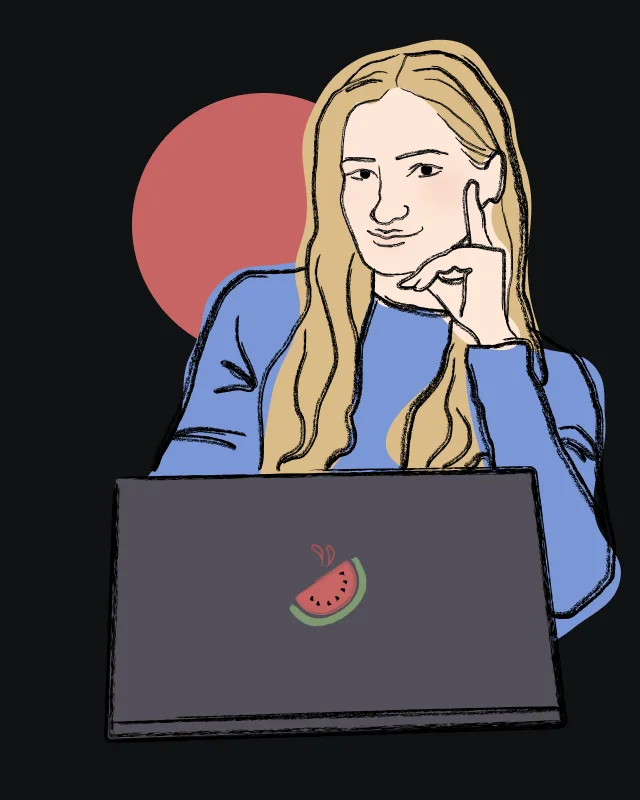

Hi,
I'm Sofia Muroga
室賀 ソフィア
FinTech Web Designer based in Tokyo
With over 2 years' experience in the Japanese FinTech industry, I design to reduce friction, improve conversion and usability and to elevate digital experiences, always with the user at the core.



About Me
Designing across multiple working cultures
Much of my work involves bridging Japanese and global teams.
Commercial strategy discussions may happen in Japanese while documentation, design rationale and project communication are shared in English.
Living and working across both cultures has shaped how I think about design, giving me first-hand experience of the differences in user expectations, communication styles and digital conventions between European and Japanese products.